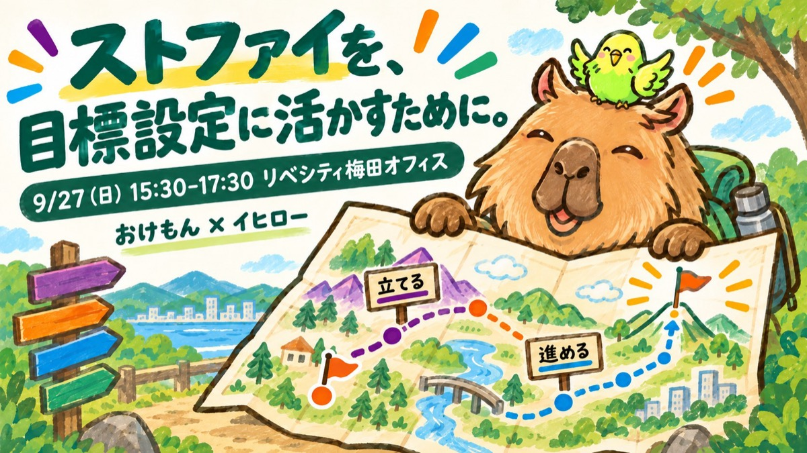

【稼げや祭り】おけもん×イヒロー ／ 参加される方へ 前日の準備と当日のワークシート
明日はこんな時間です
視点1 目標を立てる時
自分の特性に合う目標を選ぶ
自転車より新幹線。自然と動ける入り口から目標を組みます。
材料＝その資質が「満たされていた時」
視点2 目標に向かう時
立てた目標に、資質をどう使うか
止まりそうな時に、気合いではなく資質で乗り換えます。
材料＝その資質が「渇いていた時」
材料になるのは、資質の説明文よりあなた自身の体験です。今夜ほんの少しだけ、自分の資質と過ごしてきてください。
今夜5〜10分
書いたものはこの端末の中だけに残ります。明日も同じ端末・同じブラウザで開けば、そのまま出てきます。
1結果を読み込む1分
TOP5（自動で入ります。スクショしか無い方は、1位から順に手で入力してください）
PDFは、受検した時に届いたメールか、Gallupのサイト（Gallup Access）にサインインした画面にあります。まだ受けていない方は受け方の1枚へ（30〜40分で終わります）。
2自分の資質のページを1つ読む3分
TOP5が入ると、ここにあなたの資質のカードが並びます。押すと解説ページが開きます。
全部読まなくて大丈夫です。いちばん「自分っぽい」と思う1つだけ。3分なら、ページの案内どおり「01のあるある」と「02のチェック」だけで十分です。読みながら「ここはわかる」「ここはピンとこない」を覚えておいてください。
いちばん「自分っぽい」と思った資質を1つ
3印象に残っている場面を、1つずつ3分
きれいな文章にしなくて大丈夫です。単語だけでも、明日そこから広げます。スマホの写真フォルダをさかのぼると思い出しやすいです。
その資質が満たされていたのは、どんな時？視点1のヒント
逆に、渇いていたのはどんな時？視点2のヒント
説明を読んで「ピンとこなかった」ところ（あれば）
資質の説明に合わせにいかなくて大丈夫です。「最近いちばん楽しかった1時間」と「最近しんどかったこと」を書けば、それで2つになります。
4明日使うAIにログインしておく1分
後半の60分は、Claude（またはChatGPT）と話しながら目標をつくります。当日使うスマホかPCで、ログインできることだけ確かめておいてください。ノートPCがあると少しラクです。
たとえば
満たされていた時
好きな人に会いに行く時。水野さんに会いに行くなら、毎月のように新幹線代をかけてでも東京へ行きたい。
視点1「何をやるか」より「誰と・誰のために」から目標を組む
渇いていた時
「劇団四季オフ会」「ユニバオフ会」。中身で誘われても、ぜんぜんときめかない。
視点2止まりそうになったら、一緒にやりたい人との予定を先に入れる
当日
おけもんの話のあとに使います。上で書いた内容がそのまま入ります（明日その場で書き足してもOK）。「コピー」を押して、ClaudeやChatGPTに貼ってください。結果のPDFかスクショも一緒に添付します。そのあとは、イヒローさんの工程2の文を貼ります。
コピーされる文
もう少し深めたい方へ
1つの資質を、15分の質問で「自分の言葉」にするアプリもあります。自分の言葉ワーク（15分）をひらく
資質の記述は CliftonStrengths®（Gallup, Inc.）のレポート内容にもとづく解釈です。領域の色分けはGallupの4領域にもとづきます。